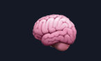

NEUROVERBSAquí está el PDF “tal cual” (literal). Puedes leerlo primero y luego hacer las actividades para sumar XP.
Completa estas actividades una sola vez para sumar XP. Usa Abrir para ir directo a la sección.
En este entrenamiento nos concentramos en los pronombres personales (subject).
| Español | English |
|---|---|
| Yo | I |
| Tú / Usted | You |
| Él | He |
| Ella | She |
| Eso / Cosa | It |
| Nosotros | We |
| Ustedes | You |
| Ellos / Ellas | They |
| Subject | Object | Poss. Adj | Poss. Pronoun | Reflexive |
|---|---|---|---|---|
| I | Me | My | Mine | Myself |
| You | You | Your | Yours | Yourself |
| He | Him | His | His | Himself |
| She | Her | Her | Hers | Herself |
| It | It | Its | Its | Itself |
| We | Us | Our | Ours | Ourselves |
| You | You | Your | Yours | Yourselves |
| They | Them | Their | Theirs | Themselves |
Regla clave del PDF: en Present Simple, la 3ª persona (He/She/It) lleva -s/-es.
| Persona | Subject | Ejemplo | Traducción |
|---|---|---|---|
| Yo | I | I work | Yo trabajo |
| Tú / Usted | You | You work | Tú trabajas / Usted trabaja |
| Él | He | He works* | Él trabaja |
| Ella | She | She works* | Ella trabaja |
| Eso / Cosa | It | It works* | Eso funciona / Eso trabaja |
| Nosotros | We | We work | Nosotros trabajamos |
| Ustedes | You | You work | Ustedes trabajan |
| Ellos / Ellas | They | They work | Ellos/Ellas trabajan |
| Tipo | Verbo (Inglés) | Traducción | 3ª persona (He/She/It) |
|---|---|---|---|
| Regular | To Play | Jugar | Plays |
| Regular | To Cook | Cocinar | Cooks |
| Regular | To Walk | Caminar | Walks |
| Regular | To Dance | Bailar | Dances |
| Regular | To Listen | Escuchar | Listens |
| Irregular | To Drink | Beber | Drinks |
| Irregular | To Sleep | Dormir | Sleeps |
| Irregular | To Eat | Comer | Eats |
| Irregular | To Buy | Comprar | Buys |
| Irregular | To Write | Escribir | Writes |
En el PDF: Have = HABER (auxiliar) cuando va seguido de otro verbo en participio (V3).
Ej: I have eaten (Yo he comido).
| Usuario | Presente | Pasado | Futuro |
|---|---|---|---|
| Yo | He | Había | Habré |
| Tú | Has | Habías | Habrás |
| Él/Ella/Usted | Ha | Había | Habrá |
| Nosotros/as | Hemos | Habíamos | Habremos |
| Ustedes/Ellos | Han | Habían | Habrán |
| Subject | Present | Past | Future |
|---|---|---|---|
| I | Have | Had | Will have |
| You | Have | Had | Will have |
| He/She/It | Has ⚠ | Had | Will have |
| We | Have | Had | Will have |
| They | Have | Had | Will have |
Lista extraída del PDF. Puedes buscar por inglés o español.
| # | V1 | V2 | V3 | Español |
|---|
Afirmativa: I verb / I verb+ed / I have + participle • (He/She/It: verb+s • has + participle)
Negativa: I don't / I didn't / I haven't
Interrogativa: Do / Did / Have (auxiliar al frente)
Los Linking Words (conectores) unen ideas para que tus oraciones no suenen robóticas.
Reto en este entrenamiento: verbos regulares + irregulares. Para dominar la app, recorre esta ruta:
Si tu docente te dio un código de clase, pégalo aquí para asociar tu evidencia. Luego genera tu código NVKP y envíaselo al docente.